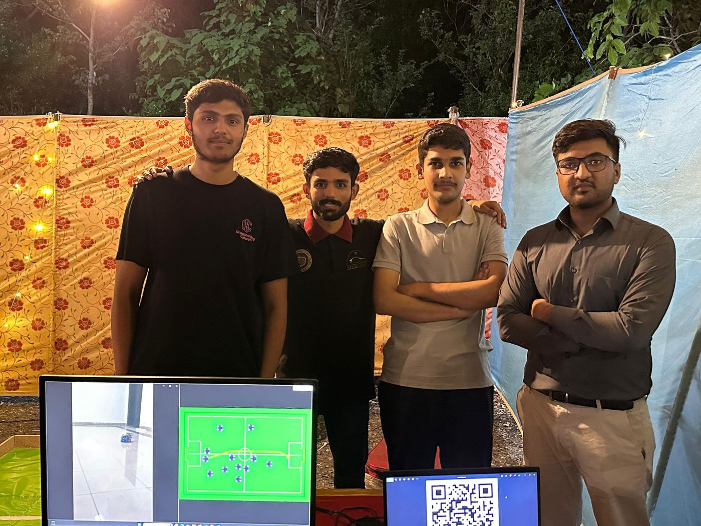

Founding member
RoboCup Small Size League
We started GIKI's robot-soccer team from nothing: the robots, the electronics and the training. I helped bring in new students and teach them the skills to keep the team going after us.
We also partnered with Sundar STEM School and trained their students, so the work reached children outside the university too.